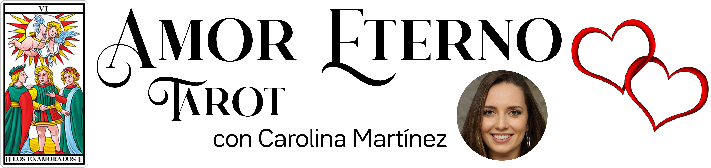

Hola!! Me llamo Carolina y te doy la bienvanida a mi rinconcito de tarot del amor. Através de las cartas ayudo a mucha gente con su vida amorosa. No dudes en hacerme tu consulta gratis y te contestaré por email en el mismo día. Sea cual sea tu problema, te ofreceré una solución.